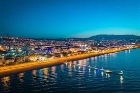

Ben Mustafa Kurban,8 ağustos 2001 de samsun'da doğdum. Liseyi Samsunun ilçesi Ladikte okudum. Şuan Sakarya Üniversitesinde Bilgisayar Mühendisliği 1.Sınıf öğrencisiyim.
Hobilerim
Elektronik aletlerle ilgili herşey hobi alanım olabilir. Lehim yapabileceeğim herşeyle uğraşmayı severim. İnternetten hazır yazılımlar indirip kodlarını incelemeyi severim. Bu benim hem işim hem hobim. Ağaç oyma ve kakma sanatı ile ilgilenmeyi çok severim. Profosyonel olmasamda ara ara ilgileniyorum. Yazın boş olan vakitlerimi balık tutarak değerlendirmeyi çok severim. Sporlar arasından düzenli olarak ilgilendiğim ve yaptığım zaman keyif aldığım tek spor yüzmedir.Bunun dışında uzay teknolojilerine inanılmaz hayranlık duyuyorum. Nihai hedefim herzaman uydu yazılımları olacak.